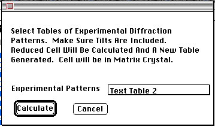

Distributed By: Virtual Labs
Calculate Experimental Primitive Lattice Dialog Box
PATH...{SAD:2D Lattice}:Define Menu::Define...
This dialog box becomes available once a 2-dimensional primitive lattice
has been calculated using the Generate Lattice command found in the SAD
Object. It requires 2 or more primitive lattices to be calculated with rotations
between the patterns included by use of the stage object.
Use the Popup menu to select the primitive lattice tables to use for the
calculation.
Pressing the Calculate button will cause Desktop to find an optimal 3-d
primitive lattice using a least squares simplex methodology for the data.
A new 3-d primitive lattice object will be generated with the calculated
primitive lattice deposited in the matrix crystal.

Author: J.ames
T. Stanley
 Desktop
Manual:Dialog Boxes
Desktop
Manual:Dialog Boxes
Distributed By: Virtual Labs
Last Updated:1/12/96 Sat, Apr 27, 1996